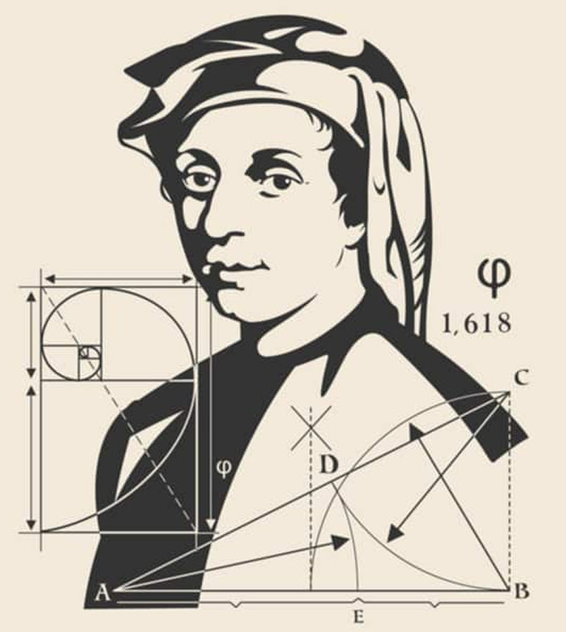
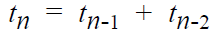
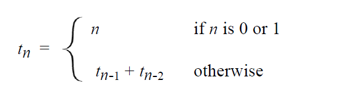

The Fibonacci Sequence
In 1202, the Italian mathematician Leonardo Fibonacci experimented with how a population of rabbits would grow from generation to generation, give a set of rules. His rules lead to a sequence of terms, which today are called the Fibonacci sequence: each term is the sum of the two numbers preceding it.
Expressed as a recurrence relation:

This alone is not sufficient, however; you can define new terms, but the process has to start somewhere! You need at least two terms already available, which means that the first two terms in the sequence— t0 and t1—must be defined explicitly.

Given this qualification, the Fibonacci sequence can be expressed as:
To write a recursive implementation of a fibonacci(n) function, you need only plug in the simple cases, plus the recurrence relation, and you're done.
int fib(int n)
{
if (n < 2) { return n; } // base case
return fib(n - 1) + fib(n - 2);
}How do you convince yourself that the fib() function works? If you begin by tracing through the logic, I guarantee that you'll be confused. Instead, regard this entire mechanism as irrelevant detail.
Since the argument values are smaller, each of these calls represents a simpler case, and so, applying the recursive leap of faith, you can assume that the program correctly computes each of these values. Case closed. You don’t need the details.
 This course content is offered under a
CC
Attribution Non-Commercial license. Content in this course
can be considered under this license unless otherwise noted.
This course content is offered under a
CC
Attribution Non-Commercial license. Content in this course
can be considered under this license unless otherwise noted.